Формат DOCX
PANDOC
pandoc — универсальный конвертор текстовых форматов.
c:\prog\pandoc\pandoc -o lab2.docx lab2.md
Стили:
- Заголовок X — HeadingX;
- Обычный текст — Normal и First Paragraph;
- … .
Шаблон WORD для Pandoc
Создание шаблона:
pandoc -o custom-reference.docx
--print-default-data-file reference.docx
С использованием шаблона:
pandoc -o lab2.docx lab2.md
--reference-doc=reference.docx
Распаковка WORD
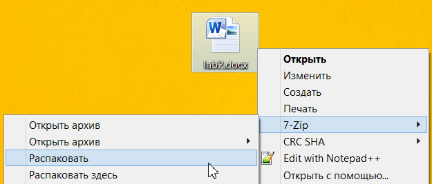
Структура DOCX
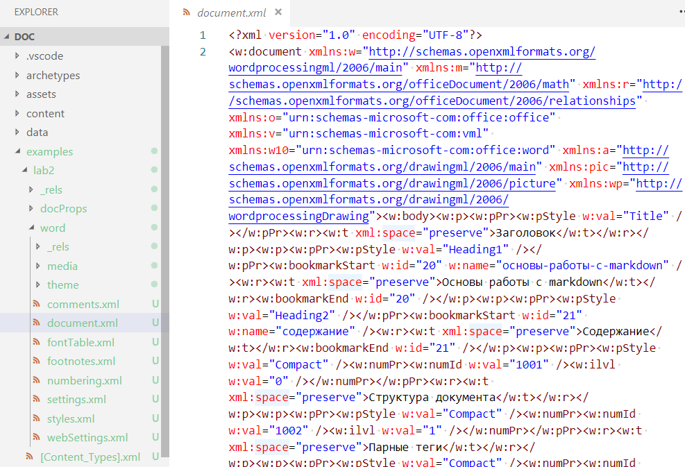
Поля Word
Типы полей
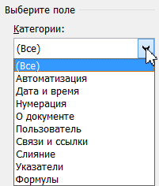 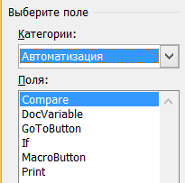 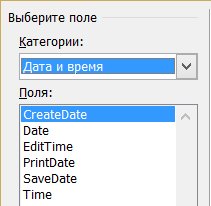 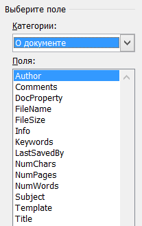
Типы полей 2
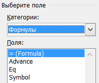 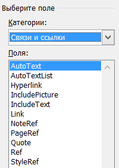 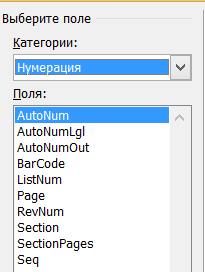
Поле ListNum

Поле REF
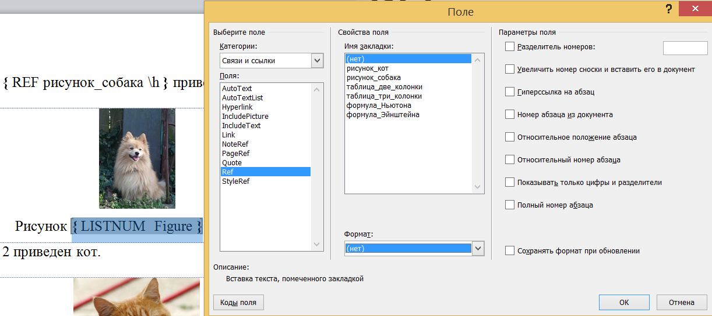
Списки и счетчики
Многоуровневый список WORD
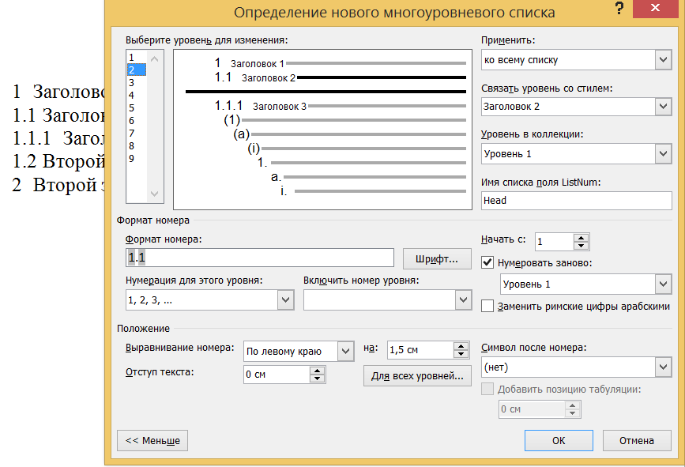
Ссылки WORD
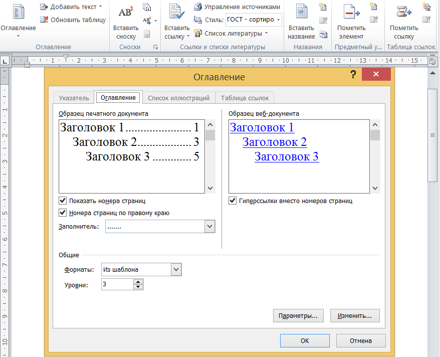
Счетчики HTML
<style>
li { list-style-type: none; } /* Убираем исходную нумерацию у списка */
ol { counter-reset: list1; } /* Инициируем счетчик */
ol li:before {
counter-increment: list1; /* Увеличиваем значение счетчика */
content: counter(list1) ". "; /* Выводим число */
}
ol ol { counter-reset: list2; } /* Инициируем счетчик вложенного списка */
ol ol li:before {
counter-increment: list2; /* Увеличиваем значение счетчика вложенного списка */
content: counter(list1) "." counter(list2) ". "; /* Выводим число */
}
</style>
Перечни HTML и markdown
Для перечней используются редакторы или системы сборки.
Например, расширение «Markdown All in One»:
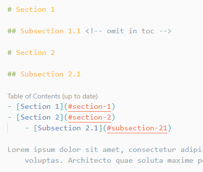